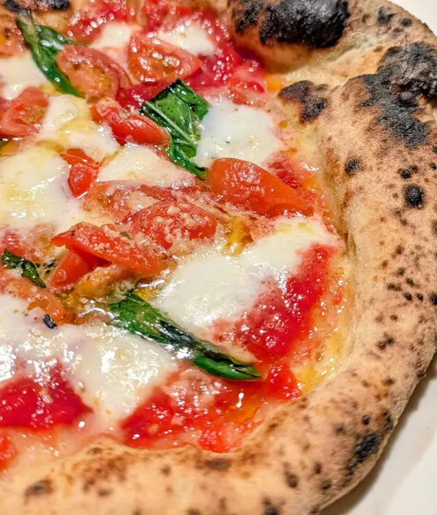
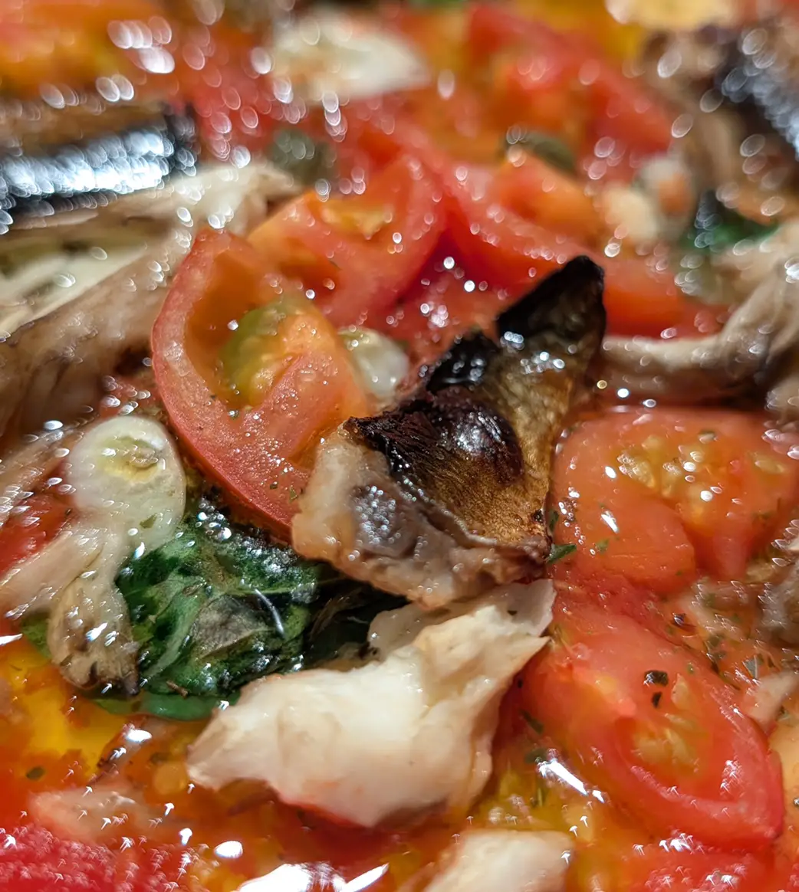
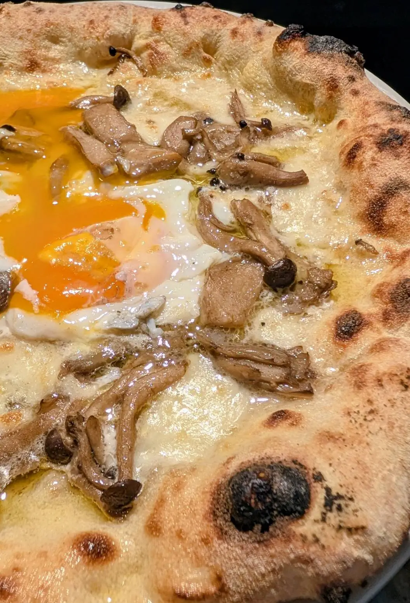

薪窯で、一枚ずつ
高温の薪窯で短時間に焼き上げることで、縁はふっくら、中はもっちりと軽い生地になります。焼き目の香ばしさも薪窯ならではです。

高温の薪窯で短時間に焼き上げることで、縁はふっくら、中はもっちりと軽い生地になります。焼き目の香ばしさも薪窯ならではです。
多摩地区で唯一、APN（ナポリピッツァ職人協会）の認定職人が在籍。ナポリの伝統を守りながら、季節の食材を使ったピッツァもお出ししています。
「クロッキオ」はイタリア語で“仲間”。ご家族やご友人と、みんなで囲めるピッツェリアでありたいと思っています。
1,210円〜
ピッツァ、またはパスタのランチ。マルゲリータやビアンケッティ、季節のピッツァ、日替わりのパスタからお選びください。グリーンサラダもお付けできます。
11:00〜14:30（ラストオーダー 14:00）／月曜定休


ピッツァを中心にした前菜からドルチェまでのコースをご用意しています。ご予算や人数に合わせてご相談ください。
17:30〜21:30（日曜は21:00まで）／月曜定休
焼きたてのピッツァをお持ち帰りいただけます。お電話でご注文ください。
併設の Caffetteria DESTINO では、ナポリ菓子とエスプレッソのテイクアウトもどうぞ。
ネット予約・LINE・Instagram のメッセージでのご予約は承っておりません。お手数ですがお電話でお願いいたします。
お電話（042-319-0575）で承っています。ネット予約・LINE・Instagramのメッセージでのご予約は承っておりません。
京王線・JR南武線「分倍河原駅」から徒歩3分です。住所は東京都府中市片町3-23-13です。
火曜〜日曜の11:00〜14:30（ラストオーダー14:00）に、ピッツァまたはパスタのランチを1,210円からご用意しています。
できます。お電話でご注文ください。来店時の焼き上げ・焼き置き、6カット・8カットを選べます。
ピッツァを中心としたコース（3,850円〜）、飲み放題（1,870円・ビール付き2,200円）をご用意しています。貸切はご相談ください。
月曜日です。火曜〜土曜は11:00〜14:30・17:30〜21:30、日曜は11:00〜14:30・17:30〜21:00に営業しています。
| 火〜土 | 11:00〜14:30／17:30〜21:30 |
|---|---|
| 日 | 11:00〜14:30／17:30〜21:00 |
| 月 | 定休日 |